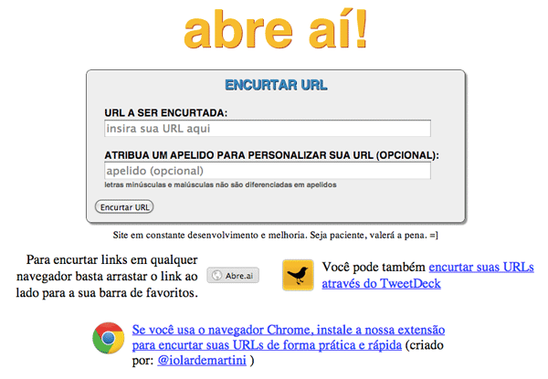

Como configurar e publicar uma aplicação rails em produção...
Quem sou eu
Leandro Nascimento Camargo
Fazia Eng. da Computação PUC-GO mas larguei
Trabalho na ...
Criei e mantenho um encurtador de URLs chamado:
abre.ai

ok...
por que é bom eu saber disso?
Porque suas opções inicialmente são:
É ruim confiar o negócio seu ou de seu cliente em um servidor compartilhado
Você nunca sabe com quem você está dividindo os recursos do servidor
Não facilite para a lei de Murphy te achar
Opcões que recomendo:
- Linode
- Digital Ocean
- AWS (Amazon Web Services) -- nem tanto
- Slicehost
Inicialmente vou guiá-los a configurar um servidor no Digital Ocean:
- Numa instância estruturada em nuvens (cloud computing)
- 512MB Ram
- 20GB de storage
- 1 core de CPU (não me pergunte qual)
- Acesso root (?)
O que espero de vocês:
- Que financiem um dos meus projetos
- (brincadeirinha)
- Que não tenham medo de terminais, nem de linha de comandos
- Que conheçam um pouco o rails
- E que já tenham feito deploy de outra aplicação qualquer usando FTP
Ferramentas que serão utlilizadas:
- Git
- Github (hospedagem de repositório)
- Rails (e Ruby)
- Nginx (web server)
- Passenger (integrador do rails server com web server)
- MySQL
- Capistrano (para o deploy)
Capistrano > rsync > scp > FTP
←
→
/
#